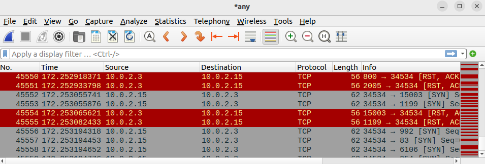
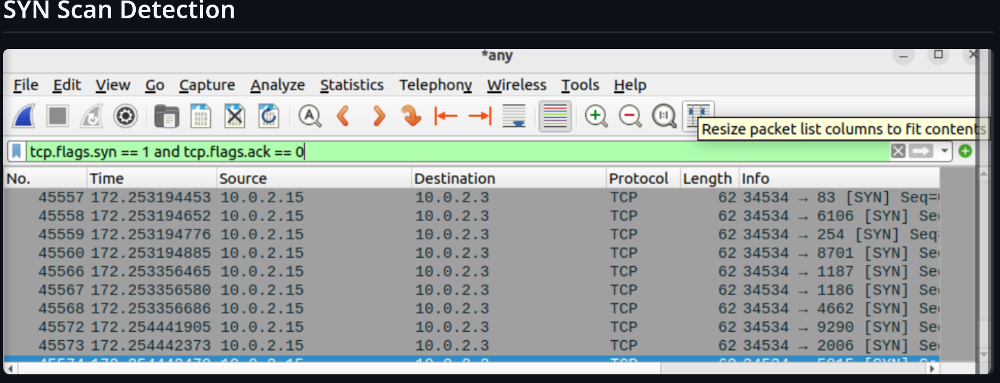
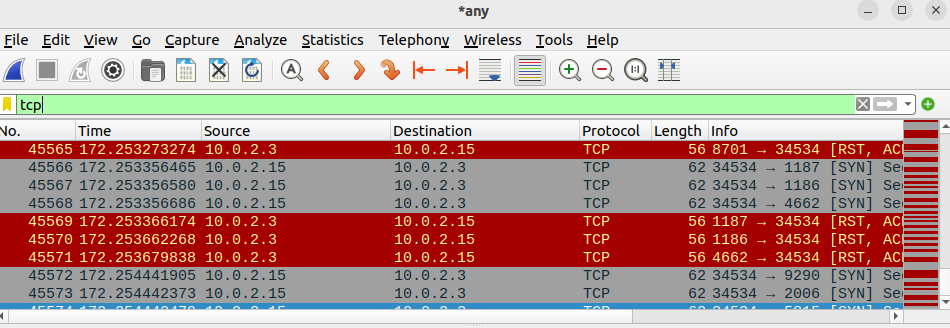
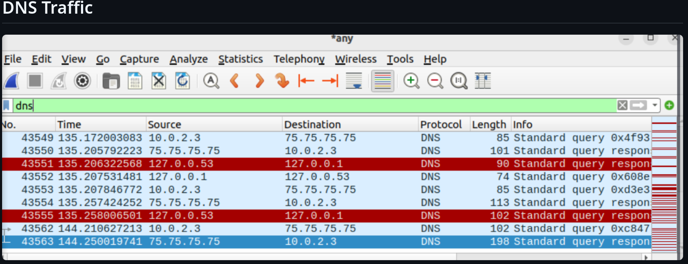
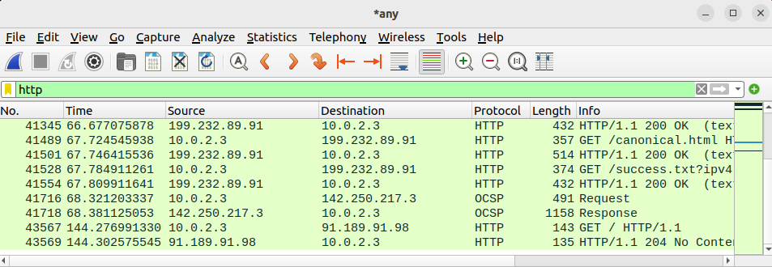
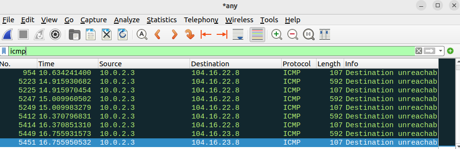

1 Initial Packet Capture
Before applying any filters, I reviewed the raw traffic to understand overall activity between the attacker and victim. Repeated TCP exchanges showed that deeper analysis was required.

A hands-on Blue Team investigation demonstrating packet analysis, threat hunting, and incident response using Wireshark to detect Nmap reconnaissance activity.
In this lab, I simulated a TCP SYN scan using Nmap from an attacker machine to enumerate open ports on a victim system. I captured and analyzed the network traffic using Wireshark to identify reconnaissance behavior, extract indicators of compromise, and document findings in a SOC-style incident report. This project demonstrates my ability to detect early-stage attacks and apply Blue Team analysis techniques.
I built this project to understand how network reconnaissance appears at the packet level and to practice evidence-based SOC investigation.
I launched an Nmap TCP SYN scan from 10.0.2.15 against 10.0.2.3, captured the traffic in Wireshark, analyzed TCP flags and port activity, mapped the behavior to MITRE ATT&CK, and documented a SOC-style response.
I learned how SYN, SYN/ACK, RST and RST/ACK behavior, repeated port probes, and incomplete handshakes reveal reconnaissance; how Wireshark filters reduce packet noise; and how to turn raw evidence into an analyst conclusion, severity assessment, and response recommendation.
TCP SYN Scan (-sS)
nmap -sS 10.0.2.3
Before applying any filters, I reviewed the raw traffic to understand overall activity between the attacker and victim. Repeated TCP exchanges showed that deeper analysis was required.

I filtered for SYN packets without ACK flags to reveal repeated connection attempts across multiple destination ports.
tcp.flags.syn == 1 && tcp.flags.ack == 0

I reviewed all TCP communication between both systems. The repeating SYN and RST/ACK pattern across many ports is consistent with service enumeration rather than normal application traffic.
tcp

I checked DNS queries and responses for suspicious domains, tunneling behavior, or lookup patterns related to the scan. The observed DNS traffic appeared routine.
dns

I reviewed HTTP traffic for exploitation attempts, suspicious requests, or payload delivery. No evidence showed that reconnaissance progressed into web exploitation.
http

I checked ICMP traffic for ping sweeps, host discovery, or other reconnaissance activity. The captured packets primarily showed destination unreachable messages.
icmp

The evidence confirms that 10.0.2.15 performed a TCP SYN scan against 10.0.2.3 using Nmap. The activity remained limited to reconnaissance. I found no evidence of exploitation, payload delivery, malware execution, or command-and-control communication. DNS, HTTP, and ICMP traffic did not reveal related malicious follow-on activity.